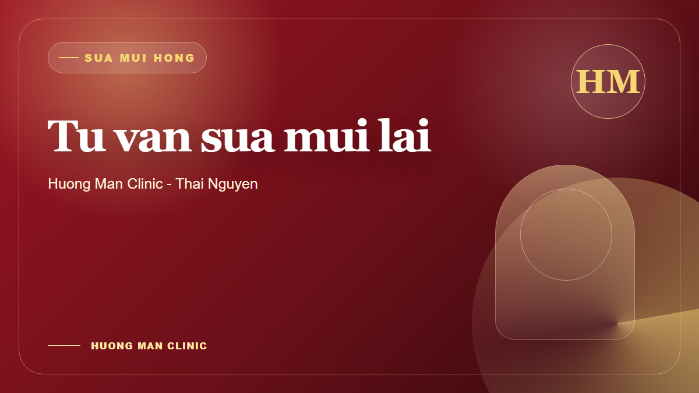
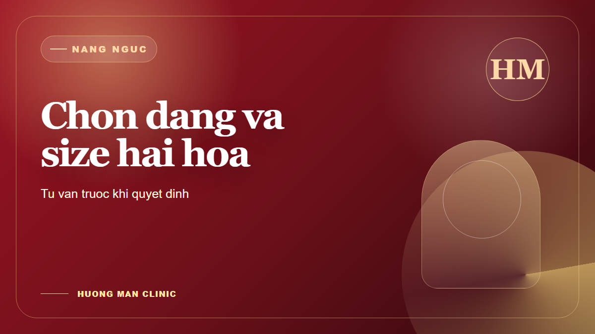
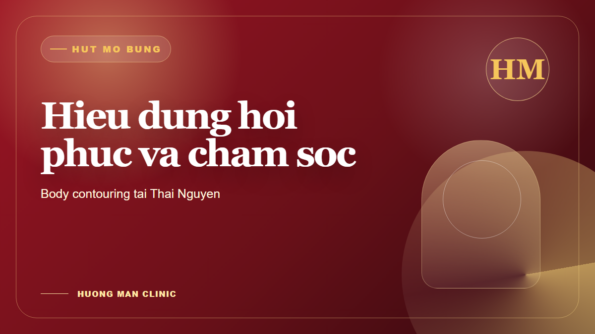
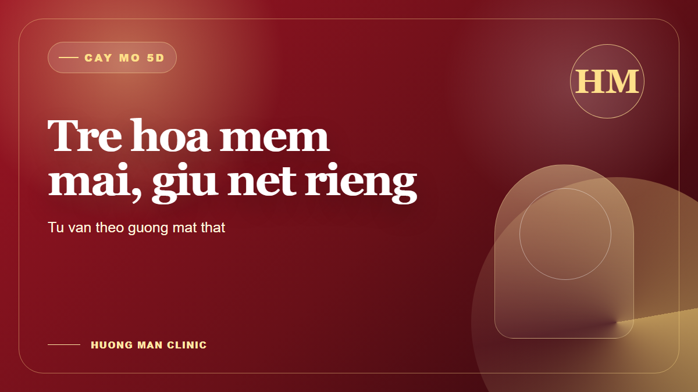
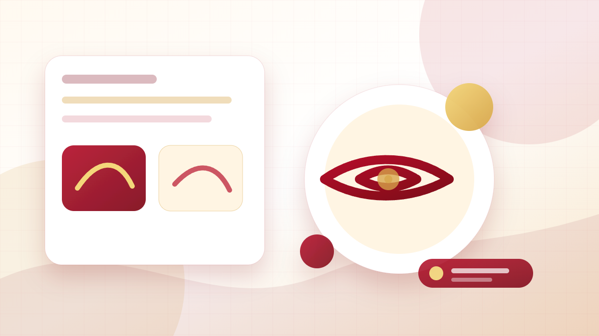
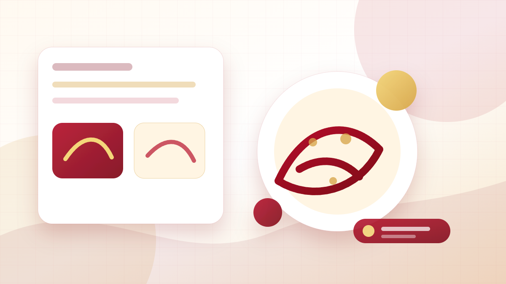
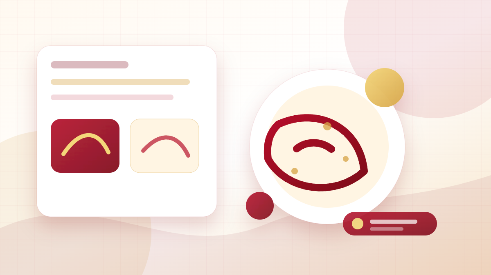
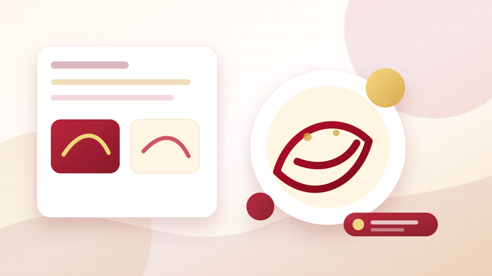

Sửa mũi
Sửa mũi hỏng Thái Nguyên có sửa được không? Khi nào nên tư vấn lại
Sửa mũi hỏng Thái Nguyên có sửa được không, khi nào nên tư vấn lại và cần chuẩn bị thông tin gì? Gợi ý cách đánh giá mũi cũ trước khi đặt lịch tại Hương Mận.
Đọc bài viết

Nâng ngực
Nâng ngực Thái Nguyên cần chuẩn bị gì trước khi tư vấn?
Nâng ngực Thái Nguyên cần chuẩn bị gì trước khi tư vấn? Xem các câu hỏi về dáng ngực, size túi, thời gian hồi phục và tiêu chí chọn phương án phù hợp.
Đọc bài viết

Hút mỡ bụng
Hút mỡ bụng Thái Nguyên bao lâu hồi phục? Cần hỏi gì trước khi làm
Hút mỡ bụng Thái Nguyên bao lâu hồi phục, ai phù hợp và cần hỏi gì trước khi làm? Gợi ý chuẩn bị tư vấn để hiểu rõ kỳ vọng, chăm sóc và theo dõi.
Đọc bài viết

Vùng kín
Thẩm mỹ vùng kín Thái Nguyên có nên tư vấn riêng không?
Thẩm mỹ vùng kín Thái Nguyên có nên tư vấn riêng không? Tìm hiểu cách chuẩn bị câu hỏi, yếu tố riêng tư, an toàn và chăm sóc sau dịch vụ.
Đọc bài viết

Cấy mỡ 5D
Cấy mỡ 5D Thái Nguyên phù hợp với ai? Những điều nên hỏi trước
Cấy mỡ 5D Thái Nguyên phù hợp với ai, có thể cải thiện vùng nào và cần hỏi gì trước khi làm? Hướng dẫn chuẩn bị tư vấn tại Hương Mận.
Đọc bài viết

Nâng mũi
Nâng mũi Thái Nguyên nên chọn dáng nào? Gợi ý tư vấn tại Hương Mận
Nâng mũi Thái Nguyên nên chọn dáng nào để hài hòa gương mặt? Xem cách tư vấn dáng mũi, câu hỏi cần chuẩn bị và tiêu chí đánh giá trước khi đặt lịch tại Thẩm mỹ Hương Mận.
Đọc bài viết

Cắt mí
Cắt mí Thái Nguyên mắt sưng bao lâu? Cách chăm sóc để hồi phục tốt hơn
Cắt mí Thái Nguyên mắt sưng bao lâu, khi nào nên tái khám và chăm sóc thế nào? Bài viết giúp bạn hiểu các mốc hồi phục, dấu hiệu cần hỏi lại và cách chuẩn bị trước khi làm mí.
Đọc bài viết

Trị nám
Trị nám Thái Nguyên: Laser Toning có phù hợp với da của bạn không?
Laser Toning trị nám Thái Nguyên có phù hợp không? Tìm hiểu khi nào nên tư vấn laser, yếu tố ảnh hưởng hiệu quả, cách chăm sóc và câu hỏi cần hỏi trước liệu trình.
Đọc bài viết

Trị mụn
Trị mụn Thái Nguyên cho da dầu: nên bắt đầu điều trị thế nào?
Da dầu mụn nên bắt đầu trị mụn Thái Nguyên thế nào? Hướng dẫn cách chuẩn bị buổi tư vấn, kiểm soát dầu, chăm sóc sau lấy nhân mụn và tránh sai lầm thường gặp.
Đọc bài viết

Trẻ hóa
Căng da mặt Thái Nguyên: nên chọn Mini Facelift hay SMAS?
Căng da mặt Thái Nguyên nên chọn Mini Facelift hay SMAS? So sánh mục tiêu, đối tượng phù hợp, mức độ can thiệp và câu hỏi cần hỏi trước khi tư vấn trẻ hóa.
Đọc bài viết
Địa chỉ
Thẩm mỹ Hương Mận ở đâu?
Tìm hiểu địa chỉ, giờ làm việc, dịch vụ nổi bật và cách đặt lịch tư vấn tại Thẩm mỹ Hương Mận.
Đọc bài viết
Trust
Thẩm mỹ Hương Mận có tốt không?
Cách đánh giá một cơ sở làm đẹp qua thông tin minh bạch, tư vấn thực tế và trải nghiệm khách hàng.
Đọc bài viết
Review
Review Thẩm mỹ Hương Mận
Những điều khách hàng thường quan tâm trước khi đặt lịch tư vấn mắt, mũi, da hoặc trẻ hóa.
Đọc bài viết
Lựa chọn
Vì sao nên chọn Thẩm mỹ Hương Mận?
Các lý do khiến thương hiệu được quan tâm tại Thái Nguyên: vị trí, dịch vụ, tư vấn và trải nghiệm.
Đọc bài viết
Tư vấn
Quy trình tư vấn tại Thẩm mỹ Hương Mận
Buổi tư vấn nên diễn ra như thế nào để khách hàng hiểu đúng tình trạng và phương án phù hợp.
Đọc bài viết
An toàn
Tiêu chí an toàn khi làm đẹp
Những điểm cần kiểm tra khi tìm hiểu Thẩm mỹ Hương Mận trước khi quyết định thực hiện dịch vụ.
Đọc bài viết
Dịch vụ
Các dịch vụ nổi bật của Thẩm mỹ Hương Mận
Tổng quan các nhóm mắt, mũi, trẻ hóa, điều trị da và chăm sóc vóc dáng đang được quan tâm.
Đọc bài viết
Khách hàng
Ai nên tư vấn trước khi làm đẹp?
Những nhóm khách hàng nên trao đổi trực tiếp trước khi chọn dịch vụ tại Thẩm mỹ Hương Mận.
Đọc bài viết
Hậu chăm sóc
Chăm sóc sau liệu trình có quan trọng không?
Vì sao hướng dẫn sau dịch vụ là một phần quan trọng trong trải nghiệm làm đẹp an toàn.
Đọc bài viết
Kinh nghiệm
Kinh nghiệm chọn thẩm mỹ viện uy tín
Các tiêu chí chọn cơ sở làm đẹp và lý do nhiều người tìm kiếm Thẩm mỹ Hương Mận.
Đọc bài viết
Nâng mũi
Nâng mũi Thái Nguyên nên tư vấn gì trước khi làm?
Những câu hỏi quan trọng về dáng mũi, chất liệu, hồi phục và theo dõi sau dịch vụ trước khi chọn cơ sở phù hợp.
Đọc bài viết
Cắt mí
Cắt mí Thái Nguyên: kinh nghiệm chọn địa chỉ phù hợp
Gợi ý đánh giá tình trạng mí, cách xem tư vấn và các tiêu chí quan trọng khi tìm dịch vụ mắt tại Thái Nguyên.
Đọc bài viết
Trị nám
Trị nám Thái Nguyên: giải pháp nào được quan tâm?
Tìm hiểu cách khách hàng thường bắt đầu từ thăm khám, xác định loại nám và lên lộ trình điều trị phù hợp.
Đọc bài viết
Trị mụn
Trị mụn Thái Nguyên: khi nào cần liệu trình chuyên sâu?
Dấu hiệu nên thăm khám sớm, cách chọn phác đồ và các yếu tố cần hỏi trước khi bắt đầu điều trị mụn.
Đọc bài viết
Trẻ hóa
Căng da mặt Thái Nguyên: giải pháp trẻ hóa được quan tâm
Những nhóm khách hàng nên tư vấn sớm, cách chọn phương án phù hợp và các lưu ý khi tìm dịch vụ trẻ hóa.
Đọc bài viết
Giảm mỡ
Giảm mỡ bụng Thái Nguyên: phương pháp nào phù hợp?
Gợi ý phân biệt tình trạng mỡ, đặt kỳ vọng thực tế và chọn lộ trình tư vấn theo nhu cầu vóc dáng.
Đọc bài viết
Uy tín
Thẩm mỹ viện uy tín Thái Nguyên: 5 tiêu chí cần biết
Từ nội dung minh bạch đến hậu chăm sóc, đây là 5 tiêu chí thực tế để chọn nơi làm đẹp phù hợp hơn.
Đọc bài viết
Thương hiệu
Thẩm mỹ Hương Mận Thái Nguyên: dịch vụ nào phù hợp?
Gợi ý chọn nhóm dịch vụ mắt, mũi, da, trẻ hóa và vóc dáng trước khi đặt lịch tư vấn trực tiếp.
Đọc bài viết
Chi phí
Nâng mũi Thái Nguyên giá bao nhiêu và cần chuẩn bị gì?
Những yếu tố ảnh hưởng đến chi phí và các thông tin nên chuẩn bị trước buổi tư vấn nâng mũi.
Đọc bài viết
Hồi phục
Cắt mí Thái Nguyên có đau không và cách hồi phục
Giải đáp cảm giác thường gặp, mốc hồi phục và những câu hỏi nên hỏi trong buổi tư vấn mắt.
Đọc bài viết
Lộ trình
Trị nám Thái Nguyên bao lâu thì thấy rõ?
Góc nhìn thực tế về lộ trình cải thiện nám, yếu tố ảnh hưởng và cách đánh giá tiến triển.
Đọc bài viết
Chăm sóc
Trị mụn Thái Nguyên sau liệu trình nên ăn gì?
Chế độ ăn uống và các thói quen sau điều trị mụn giúp da phục hồi tốt hơn.
Đọc bài viết
Hậu chăm sóc
Chăm sóc sau nâng mũi Thái Nguyên: lưu ý quan trọng
Những lưu ý cần biết trước và sau dịch vụ để theo dõi hồi phục đúng cách.
Đọc bài viết
Đặt lịch
Đặt lịch tư vấn Thẩm mỹ Hương Mận Thái Nguyên
Cách bắt đầu đúng cách bằng một buổi tư vấn rõ ràng, có mục tiêu và có câu hỏi cụ thể.
Đọc bài viết
Chi phí
Nâng mũi Thái Nguyên giá bao nhiêu, review có tốt không?
Phân tích chi phí, cách đọc review và các dấu hiệu nhận biết dịch vụ nâng mũi phù hợp tại Thái Nguyên.
Đọc bài viết
Chi phí
Cắt mí Thái Nguyên giá bao nhiêu, review có tốt không?
Tổng hợp yếu tố ảnh hưởng giá cắt mí, cách xem review và tiêu chí chọn nơi làm mắt an toàn hơn.
Đọc bài viết
Chi phí
Trị nám Thái Nguyên giá bao nhiêu, review có tốt không?
Giải đáp chi phí điều trị nám, cách đánh giá review thực tế và câu hỏi nên hỏi trước khi đặt lịch.
Đọc bài viết
Chi phí
Trị mụn Thái Nguyên giá bao nhiêu, review có tốt không?
Xem mức chi phí trị mụn theo tình trạng da, đọc review đúng cách và nhận biết liệu trình phù hợp.
Đọc bài viết
Chi phí
Căng da mặt Thái Nguyên giá bao nhiêu, review có tốt không?
So sánh chi phí trẻ hóa, cách xem review thật và các điểm cần hỏi trong buổi tư vấn.
Đọc bài viết
Chi phí
Giảm mỡ bụng Thái Nguyên giá bao nhiêu, review có tốt không?
Tìm hiểu chi phí giảm mỡ, cách đọc review theo mục tiêu vóc dáng và lựa chọn tư vấn phù hợp.
Đọc bài viết
Nâng mũi
Nâng mũi Thái Nguyên có đau không, bao lâu thì đẹp?
Giải đáp cảm giác sau nâng mũi, mốc hồi phục và các câu hỏi nên hỏi trước khi đặt lịch tư vấn.
Đọc bài viết
Cắt mí
Cắt mí Thái Nguyên bao lâu thì đẹp, cần kiêng gì?
Tổng hợp thời gian hồi phục, chế độ kiêng cữ và cách đọc review cắt mí theo hướng thực tế hơn.
Đọc bài viết
Trị nám
Trị nám Thái Nguyên có hết hẳn không, nên làm gì?
Hiểu đúng mục tiêu trị nám, cách chọn lộ trình và những điều nên hỏi trước khi quyết định.
Đọc bài viết
Trị mụn
Trị mụn Thái Nguyên có nên nặn mụn không, quy trình ra sao?
Phân tích quy trình trị mụn, khi nào nên xử lý nhân mụn và cách theo dõi da sau dịch vụ.
Đọc bài viết
Trẻ hóa
Căng da mặt Thái Nguyên có an toàn không, ai nên làm?
Giải đáp an toàn, đối tượng phù hợp và cách đánh giá review trẻ hóa trước khi đặt lịch.
Đọc bài viết
Giảm mỡ
Giảm mỡ bụng Thái Nguyên có hiệu quả không, phù hợp ai?
Làm rõ hiệu quả thực tế, ai nên tư vấn và cách đọc review giảm mỡ theo mục tiêu vóc dáng.
Đọc bài viết
Bấm mí
Bấm mí Thái Nguyên giá bao nhiêu, có bền không?
Giải đáp chi phí bấm mí, độ bền, đối tượng phù hợp và câu hỏi nên chuẩn bị trước khi tư vấn.
Đọc bài viết
Sụp mí
Sửa sụp mí Thái Nguyên có cần phẫu thuật không?
Nhận biết dấu hiệu sụp mí, khi nào nên tư vấn và cách chọn phương án thẩm mỹ mắt phù hợp.
Đọc bài viết
Đầu mũi
Nâng đầu mũi Thái Nguyên khi nào cần làm?
Phân tích trường hợp nên tư vấn nâng đầu mũi, chi phí phụ thuộc vào đâu và cách hỏi đúng.
Đọc bài viết
Cánh mũi
Thu gọn cánh mũi Thái Nguyên có để lại sẹo không?
Giải đáp lo lắng về sẹo, ai nên thu gọn cánh mũi và cách chăm sóc sau dịch vụ.
Đọc bài viết
Laser
Laser Toning Thái Nguyên trị nám có tốt không?
Tìm hiểu Laser Toning phù hợp với da nào, cần chăm sóc gì và cách đánh giá hiệu quả theo lộ trình.
Đọc bài viết
Peel da
Peel da y tế Thái Nguyên có bong da không?
Giải thích hiện tượng bong sau peel, ai phù hợp và các lưu ý chăm sóc phục hồi da.
Đọc bài viết
Meso
Mesotherapy Thái Nguyên có tác dụng gì, bao lâu làm một lần?
Làm rõ tác dụng của Mesotherapy, tần suất tư vấn và các câu hỏi nên hỏi trước liệu trình.
Đọc bài viết
Bắp tay
Tan mỡ bắp tay Thái Nguyên có hiệu quả không?
Phân tích ai phù hợp, hiệu quả phụ thuộc vào đâu và cách đọc review giảm mỡ bắp tay.
Đọc bài viết